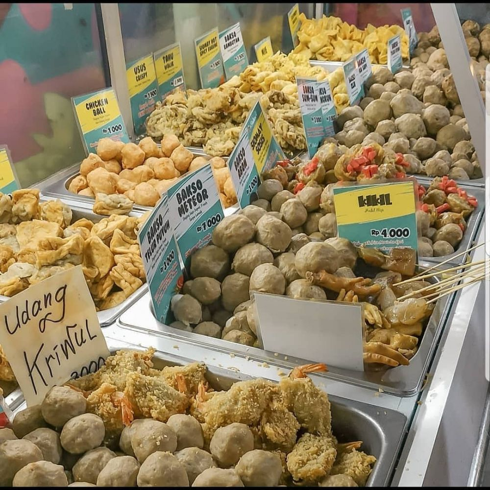
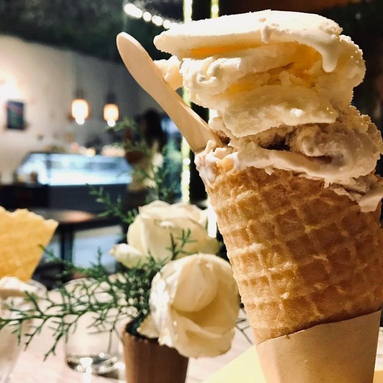

Time to Eat
Kuliner Khas Kota Batu
Berwisata ke Kota Batu sepertinya kurang lengkap jika tidak mencicipi aneka makanan khasnya yang nikmat dan menggoda. Sebab, ternyata Batu juga memiliki banyak kekayaan kuliner dengan rasa khas.
Kuliner khas Kota Batu sangatlah beragam jenisnya mulai dari cita rasa masakan khasnya, jajanan pasar, minuman, dan juga oleh-oleh khas.
MASAKAN KHAS
Soto Batu
Rempah Warung

Bakso Batu
JAJANAN PASAR
Ketan Manis
Tape Ketan
Sate Kelinci
MINUMAN KHAS

Es Krim Milco
Angsle Batu
Susu KUD
OLEH-OLEH KHAS
Keripik Buah
Apel Batu
Sari Apel